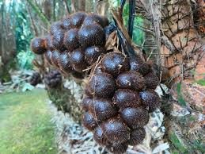

keunikan salak banjarnegara
Salak Banjarnegara memiliki keunikan tersendiri karena tumbuh di daerah dataran tinggi Dieng yang sejuk dan subur. Cuaca yang sejuk di daerah Dieng mempengaruhi kualitas buah salak, membuatnya memiliki rasa yang khas dan tekstur yang lebih renyah.
SALAK
Ciri-ciri Salak
- Kulitnya berwarna coklat kemerahan, bersisik seperti sisik ular, dan dapat mudah dikupas.
- Daging buahnya terdiri dari segmen-segmen kecil yang renyah dan berair. Rasanya manis, sedikit asam, dan memiliki tekstur yang segar
- Salak Banjarnegara memiliki rasa yang lebih manis dan lebih segar dibandingkan dengan jenis salak lainnya. Beberapa varian bahkan dapat terasa lebih renyah atau lebih lembut.